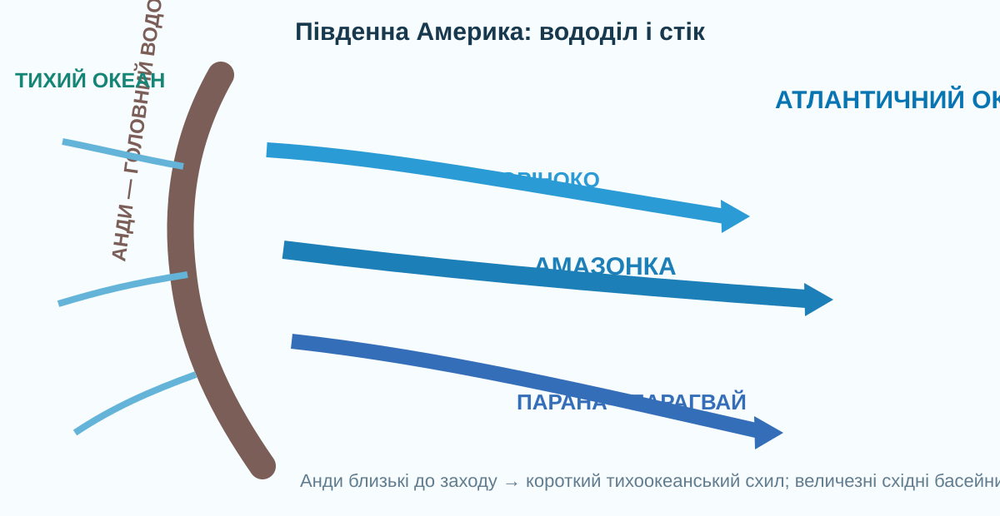

1Почніть із гіпотези
А
Велика кількість води пояснюється лише тим, що материк великий.
Б
Головне — вологий клімат і величезні водозбори, відкриті до Атлантики.
В
Анди працюють як вододіл: короткі річки йдуть до Тихого океану, довгі — на схід.
2Прочитайте річкову мережу з карти
© OpenStreetMap contributors. Простежте Амазонку, Оріноко, Парану—Парагвай, озеро Тітікака та західний схил Анд.
Вододіл
Західне узбережжя
Схід материка
3Зберіть модель басейнів

Причинний ланцюг
Розташуйте логіку в голові: вологе повітря з Атлантики → опади → густа мережа приток → велика площа водозбору → високий стік.
Контрприклад
На заході Перу й Чилі є райони, де річки короткі або тимчасові.
4Амазонка: перевірте масштаб даними

NASA/GSFC/JPL, MISR Team. Знімок гирла Амазонки супутником Terra.
NASA оцінює, що Амазонка несе найбільший обсяг прісної води серед річок світу і дає близько п’ятої частини річкового стоку до океанів. Сучасна місія SWOT відстежує ширину, висоту водної поверхні та сезонні зміни річок.
NASA: Mouth of the Amazon ↗NASA SWOT ↗NASA Worldview ↗Доказове питання
5Порівняйте чотири водні системи
Оріноко
Північ материка. Великий басейн із сезонним режимом опадів; частина вод через природний канал Касік’яре пов’язана з басейном Амазонки.
Парана—Парагвай
Південний схід. Величезний басейн із важливим транспортним і гідроенергетичним значенням; нижче формується естуарій Ла-Плата.
Тітікака
Високогірне озеро Анд на висоті близько 3810 м. UNESCO називає його найбільшим прісноводним озером Південної Америки.
UNESCO ↗Водоспади
Різкі уступи плоскогір’їв і гір створюють великі водоспади; вони показують зв’язок тектоніки, рельєфу й річкової ерозії.
6Коротке відеоспостереження
NASA/JPL/PODAAC: анімація показує, як прісна вода Амазонки змінює солоність Атлантики й переноситься океанічними течіями.
7Теорія після дослідження
Чому річок багато?
Південна Америка отримує багато опадів, особливо в екваторіальних і субекваторіальних широтах. Волога з Атлантики надходить далеко вглиб материка.
Чому стік переважно на схід?
Анди простягаються вздовж західного краю. Вони є головним вододілом; величезні рівнини на схід від них спрямовують річки до Атлантики.
Головні річки
Амазонка — найповноводніша; Оріноко — північ; Парана з Парагваєм — південний схід. Їхні басейни охоплюють значну частину материка.
Озера й водоспади
Тітікака — високогірне озеро Анд. Водоспади пов’язані з уступами плоскогір’їв і гірських районів.
8CER
Питання: Чому Південна Америка має надзвичайно потужний стік до Атлантичного океану?
9Домашнє завдання
§36. Створіть міні-досьє однієї системи: Амазонка, Оріноко, Парана—Парагвай або Тітікака. Обов’язково: витік/розташування, басейн, живлення, режим, 2 докази впливу клімату чи рельєфу, одна реальна карта або супутниковий знімок.
Електронний підручник 7 класу ↗